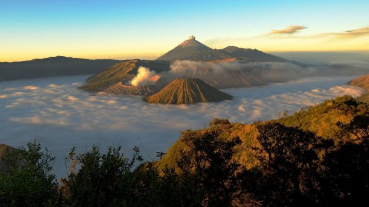
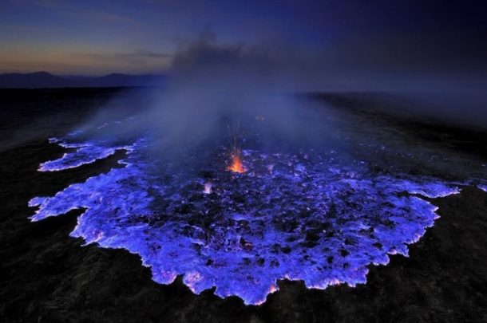

Sebelum kita kepoin list tempat wisata di Jawa Timur, yuk kita bahas dulu gambaran besar, kira-kira ada apa aja si di Jawa Timur. Jawa Timur adalah salah satu provinsi di Indonesia yang memiliki destinasi wisata lengkap. Wilayah ini menawarkan beragam wisata alam mulai dari pegunungan, pantai, gua, hingga air terjun. Selanjutnya, wisatawan yang menyukai taman bermain juga bisa datang ke beberapa lokasi di kawasan Batu dan Lamongan. Secara umum, hampir setiap kabupaten atau kota di Jawa Timur memiliki destinasi unggulan masing-masing. Nah, pada artikel ini, kita akan membahas 15 tempat wisata di Jawa Timur yang terbaik dan selalu diburu oleh wisatawan saat hari libur. Berikut ulasan selengkapnya.

1. Gunung Bromo
Gunung Bromo adalah ikon dari Jawa Timur yang sudah terkenal hingga ke mancanegara. Setiap tahun, ribuan turis asing dari kawasan Eropa berdatangan ke tempat wisata di Jawa Timur ini, terutama saat musim panas. Mereka ingin melihat sendiri seperti apa kemagisan dari Gunung Bromo yang memiliki ketinggian 2.329 mdpl ini. Gunung yang terletak di Probolinggo ini menawarkan 3 pesona yang tidak bisa ditolak dengan mudah. Pertama adalah lautan pasir yang luas. Berjalan dari parkiran hingga ke puncak gunung akan membuat kamu seperti berada di gurun pasir. Kedua adalah pemandangan dari jauh yang Instaram-able. Dari kawasan Penanjakan kamu bisa menyaksikan matahari terbit yang menembus kabut. Ketiga adalah sensasi menunggang kuda di padang pasir. Kalau kamu tidak kuat melakukan perjalanan, sewalah kuda hingga ke kaki gunung lalu kemudian naik tangga hingga ke puncak.
Sebelum kita kepoin list tempat wisata di Jawa Timur, yuk kita bahas dulu gambaran besar, kira-kira ada apa aja si di Jawa Timur. Jawa Timur adalah salah satu provinsi di Indonesia yang memiliki destinasi wisata lengkap. Wilayah ini menawarkan beragam wisata alam mulai dari pegunungan, pantai, gua, hingga air terjun. Selanjutnya, wisatawan yang menyukai taman bermain juga bisa datang ke beberapa lokasi di kawasan Batu dan Lamongan. Secara umum, hampir setiap kabupaten atau kota di Jawa Timur memiliki destinasi unggulan masing-masing. Nah, pada artikel ini, kita akan membahas 15 tempat wisata di Jawa Timur yang terbaik dan selalu diburu oleh wisatawan saat hari libur. Berikut ulasan selengkapnya.

2. Kawah Ijen
Kawah Ijen telah berhasil menjadi ikon kedua dari Jawa Timur yang ketenarannya tidak kalah dengan Bali. Terletak di kawasan Banyuwangi, kawah dari gunung yang terus mengeluarkan belerang ini menjadi tujuan wisatawan yang ingin merasakan pendakian kecil sembari menyaksikan bentang alam yang menakjubkan. Atraksi yang ditawarkan oleh tempat wisata di Jawa Timur ini adalah kegiatan penambang belerang yang unik. Ada puluhan orang menambang dari pagi untuk membawa bongkahan batu belerang dari gunung hingga ke bawah. Selain itu, Kawah Ijen juga memiliki blue fire yang merupakan salah satu fenomena alam terbaik di dunia. Saat dini hari, kawasan kawah di gunung ini memendarkan warna biru seperti api. Untuk bisa menyaksikannya, wisatawan harus berangkat pukul 01.00 atau 02.00 pagi agar sinar matahari tidak mengaburkan fenomena menakjubkan ini.